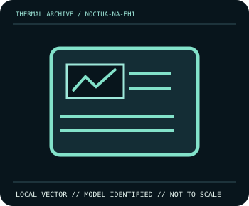

[ INDIVIDUAL COMPONENT // COOLING ]
Noctua NA-FH1 8-channel PWM Fan Hub
Eight 4-pin outputs; 54 W max via SATA or 24 W via fan-header input.

IDENTIFICATION: Match complete model, suffix, revision and bundle before installation. Related variants can differ in dimensions, brackets, wiring, connector, and operating limits.
Manufacturer specifications
| Catalog subcategory | Cooling Controllers |
|---|---|
| Exact model | Noctua NA-FH1 8-channel PWM Fan Hub |
| Published specifications | Eight 4-pin outputs; 54 W max via SATA or 24 W via fan-header input. |
| Compatibility and mounting | Powered PWM hub; only one RPM/tach signal returned. Use SATA for higher aggregate load. |
| Connector and electrical limitations | 54 W/4.5 A total SATA; 24 W/2 A via 4-pin input. Stay within selected input limit. |
Safe installation and maintenance
Disconnect PSU/SATA power before rewiring. Sum connected fan loads and check connector orientation; secure probes and cables away from moving fans.
- Follow the exact manufacturer manual for this model and host; do not interchange similar-looking parts or hardware.
- After service, verify pump/fan operation and temperature behavior under monitored conditions before normal workload.
Manufacturer source
- www.noctua.at — Noctua NA-FH1 8-channel PWM Fan Hub product informationManufacturer specifications; verify current revision-specific manual and compatibility details before installation.
This static catalog entry is an identification aid, not a compatibility guarantee; ratings can vary by revision or SKU.